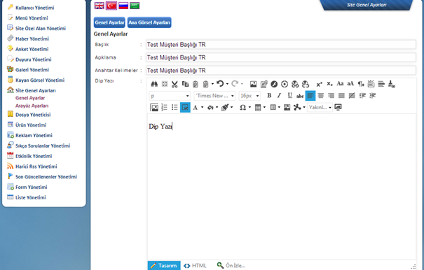
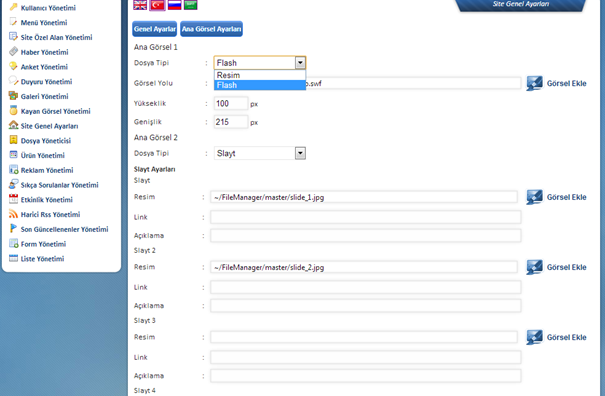
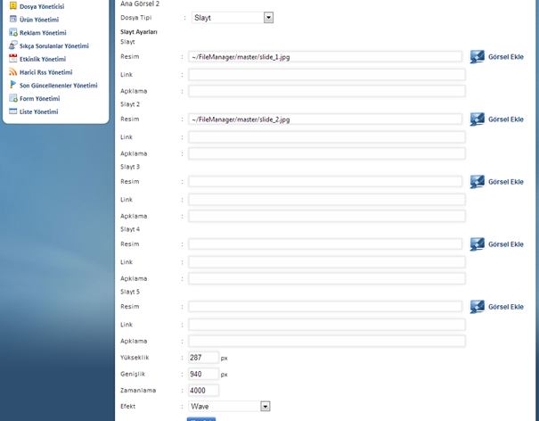

Baþlýk site adý olarak girilecektir, buraya girilen baþlýk ayný zamanda siteniz açýldýðýnda tarayýcýnýzýn tepe bandýnda görünen isimdir.
Açýklama bölümü arama motorlarý için yer almaktadýr. Buraya uzun olmayan bir cümle ile kendinizi tanýtan bir açýklama girebilirsiniz. Cümleniz uzun ise belli bir yerden sonrasýný arama motorunun keserek üç nokta (...) koyacaðýný göz önünde bulundurmanýzda yarar var.
Anahtar kelimeler sitenizin arama motorlarý tarafýndan indekslenmesi için yer almaktadýr. Belirttiðiniz kelimeler zaman içinde çeþitli arama motorlarý tarafýndan, arama kriterleri þeklinde kaydedilecek ve sitenizin bu sayfalar aracýlýðýyla ulaþýlabilirliðini arttýracaktýr. Az sayýda, ancak firmayý ve/veya hizmet/ürün/içeriðinizi en iyi þekilde anlatacak özellikteki kelimeleri seçmeniz faydalý olacaktýr.
*Zaman içinde Google Analytics gibi ziyaretçi istatistikleri ve raporlar sayesinde çeþitli anahtar kelimelere aðýrlýk verebilir, bazýlarýndan vazgeçebilirsiniz.
Dip Yazý alaný sitenizin alt bölümünde, daha çok firmanýn iletiþimine dair bilgilerin eklendiði, editör tarafýndan düzenlenebilen bir alan yer almaktadýr. Sistem size, uygulamalarý da aynen gösterecektir. Alt sayfalar tüm site için ayný þekilde görüntülenecektir. Buraya iletiþim bilgilerinizi veya vermek istediðiniz önemli mesajlarý girebilirsiniz. (Copyright bilgisi gibi.)
Düzenlemelerinizin ardýndan sayfanýn altýnda yer alan “Kaydet” butonu ile deðiþikliklerinizin sunucu tarafýnda kaydedilerek kullanýcýlara ulaþtýrýlmasýný saðlayabilirsiniz. Kaydet týklanmadan sayfa deðiþtirilirse yapýlan düzenlemeler iptal olacak ve kaybolacaktýr. Eðer emin olmadýðýnýz bir iþlem yaptýysanýz sorun yaþamamak için kaydetmeden baþka bir alana geçmeniz ve ardýndan bu sayfaya geri gelerek iþleme devam etmeniz daha saðlýklý olacaktýr.

Tepe bölümdeki görsel uygulama bantlarý için seçenekler þöyledir:
Dosya Tipi:
Resim: Herhangi bir hareket olmadan, statik bir imaj kullanýlmasý isteniyorsa bu seçenek tercih edilmelidir. Ardýndan Görsel Ekle ile bilgisayarýnýzdaki ilgili dosya sunucuya yüklenecek ve alt bölümdeki “Kaydet” alaný ile deðiþiklik sunucuya kaydedilecektir.
Flash: Tepe görselin flash dosyasýndan çektirilmesi isteniyorsa Dosya Tipi bölümünden Flash seçilecek, ardýndan eklenecek flash dosyasýnýn olmasý gereken boyutlarý yükseklik ve geniþlik þeklinde gerekli alanlara yazýldýktan sonra kaydedilecektir.
Slide Show: Bu bölümün ayarlarý panelde ayný sayfa üzerinde yer almaktadýr.

Tepe görseli slideshow özelliði ile seçilecek ise, yukarýda görüldüðü üzere slide içinde dönecek görsellere dair bilgilerin eklenmesi gerekmektedir. Sýrasýyla imajlar sunucuya yüklenerek yolu baðlantýlanacak ve açýklamalarý girilecektir. (Açýklama giriþi þart deðildir, sadece görsel girerek de kullaným yapýlabilmektedir.)
Görüldüðü üzere slideshow üzerine 5 adet görsel yükleme imkâný bulunmaktadýr, tercihe göre bu adet 5’in altýnda býrakýlabilir. Ýmajlar arasýndaki geçiþ özelliklerini tanýmlamak için Zamanlama süreci belirlenecektir. Kullanýlan görsellerin yükseklik ve geniþlik bilgileri ayrýca belirtilmeli, efekt seçimi yapýldýktan sonra kaydedilmelidir. Kaydet iþleminden sonra sitede kontrol ettiðiniz tepe alan çalýþmasýnda, örneðin efekt uygulamasýný deðiþtirmek isterseniz bu alana gelerek, efekt’i deðiþtirmeniz ve yeniden kaydet komutu vermeniz gerekmektedir.